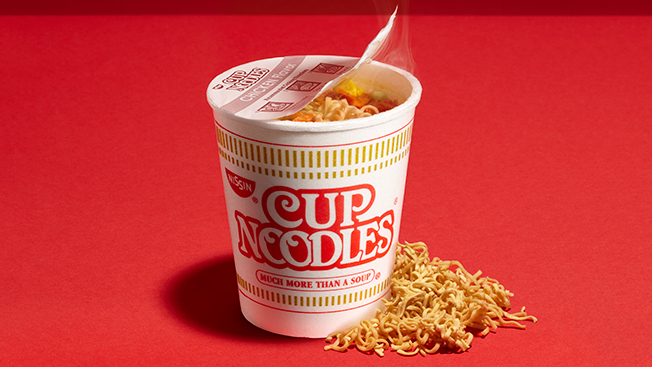

CupNoodles

Description
This is a highly sophisticated dish that only the elite can enjoy. Be ready to taste flavors out of this world with a very simple noodle dish
Ingredients
1 NISSIN original CupNoodles
Instructions
- Boil 300 ml of water
- Poor boiled water into CupNoodles and then wait 3 minuites
- Enjoy!